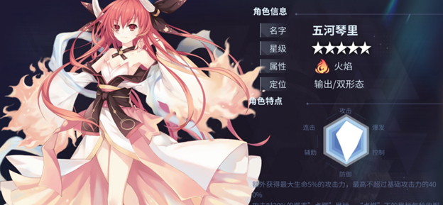
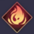
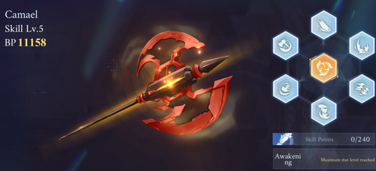
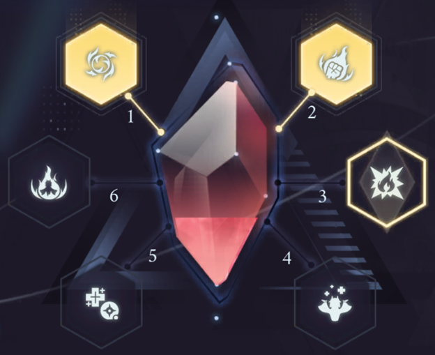
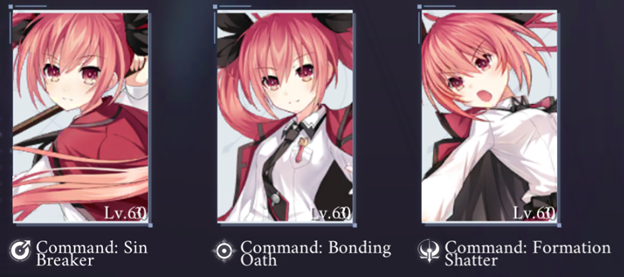
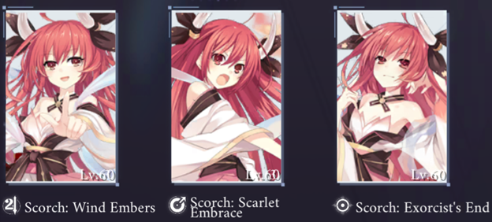
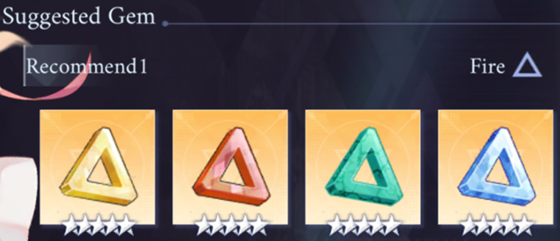
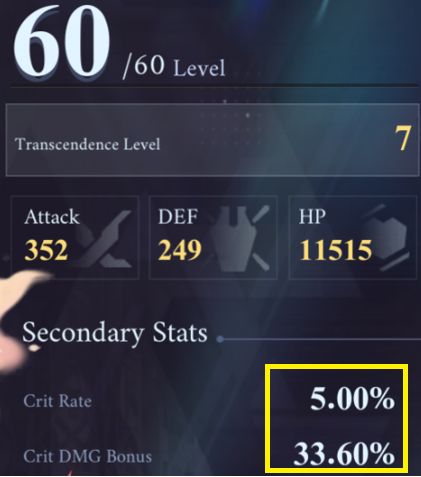

Kotori
Contributor: Sol
1. Tổng quan (Overview)

o Hệ nguyên tố: Flame - Hỏa 
o Hai mode: Rìu và pháo, sử dụng chiêu cuối để thay đổi
o Cơ chế nộ (Rage):
Khởi đầu: 0
Max: 100
Hồi phục mỗi khi đánh thường trúng mục tiêu và sử dụng kĩ năng ở dạng rìu
Tiêu hao khi ở dạng pháo (mất 4 điểm mỗi giây) và sử dụng kĩ năng dạng pháo (tùy vào mức tiêu hao của mỗi kỹ năng). Khi nộ về 0, tự động chuyển về dạng rìu
o Nội tại:
- Tăng thêm atk cơ bản dựa trên 5% máu tối đa, mức tăng tối đa 400% atk cơ bản
- Khi đánh trúng mục tiêu có tỉ lệ 20% thiêu đốt kẻ địch, hiệu ứng thiêu đốt gây sát thương chuẩn bằng 50% atk của Kotori mỗi giây
2. Thông tin kĩ năng
Thiên sứ: «Camael» (灼爛殱鬼 - Chước Lạn Tiêm Quỷ)

Dạng rìu: Xoay rìu theo quỹ đạo vòng tròn ra phía trước, gây sát thương hỏa tương đương 210% ATK
+ Cường hóa 1: Tung thêm 2 đòn tại chỗ, gây sát thương hỏa tương đương 350% ATK
+ Cường hóa 2: Dậm nhảy và bổ rìu xuống tại chỗ, gây sát thương hỏa tương đương 500% ATK
+ Cường hóa 3: Gây thêm 30% sát thương hỏa lên kẻ địch bị thiêu đốt, đòn cuối cùng có 15% cơ hội làm choáng kẻ địch trong 3s
Dạng pháo: Bắn ra tia lửa kéo dài xuyên suốt bản đồ, gây sát thương hỏa tương đương 210% ATK
+ Cường hóa 1: Tia lửa bắn ra lâu hơn, gây sát thương hỏa tương đương 350% ATK
+ Cường hóa 2: Tia lửa bắn ra lâu hơn, gây sát thương hỏa tương đương 560% ATK
+ Cường hóa 3: Giảm 20% tốc chạy của kẻ địch trúng chiêu trong 3s (thời gian được tính lại sau mỗi hit trúng)
Skill 2: Infernal Judgement
Dạng rìu: Nhảy về phía trước và bổ rìu mạnh xuống đất, gây sát thương hỏa tương đương 225% ATK
+ Cường hóa 1: Sau khi bổ xuống mặt đất sẽ nổi lên các cột lửa, gây tối đa 6 lần sát thương hỏa tương đương 30% ATK
+ Cường hóa 2: Để lại 1 vùng lửa cháy dưới mặt đất trong 6s, gây sát thương hỏa tương đương 150% ATK
+ Cường hóa 3: Tăng thêm sát thương tổng thể của kĩ năng, gây sát thương hỏa tương đương 700% ATK
Dạng pháo: Bắn ra 1 quả cầu lửa bay chầm chậm ra phía trước, gây sát thương hỏa tương đương 225% ATK
+ Cường hóa 1: Quả cầu lửa to hơn 20%
+ Cường hóa 2: Mỗi hit trúng tăng thêm thời gian tồn tại của quả cầu lửa, tối đa tăng đến 1s
+ Cường hóa 3: Quả cầu lửa phát nổ sau khi hết thời gian tồn tại, gây sát thương hỏa cho những kẻ địch lân cận tương đương 20% sát thương đã gây ra trên đường bay
Skill 3: Flame Arbiter
Dạng rìu: Dậm chân và tạo ra 1 vòng xoáy lửa tại chỗ, gây sát thương theo thời gian, nhấn giữ kỹ năng sẽ gia tăng sát thương của đòn phát nổ sau khi vòng xoáy kết thúc, đòn phát nổ gây ít nhất 365% ATK, nhấn giữ tới mức 1 tăng thêm 20% và mức 2 tăng thêm 50%
+ Cường hóa 1: Sau khi vòng xoáy kết thúc và phát nổ, Kotori bổ rìu tại chỗ, tạo đợt sóng cột lửa dội về phía trước, gây sát thương hỏa tương đương 545% ATK mỗi đợt sóng
+ Cường hóa 2: Vòng xoáy lửa sạc được tối đa thêm 1 mức, tăng sát thương hỏa của đòn phát nổ, gây ít nhất 935% ATK, nhấn giữ tới mức 3 sẽ tăng thêm 80%
+ Cường hóa 3: Sau khi nhấn giữ tới mức tối đa, Kotori được tăng sát thương hỏa tương đương 0.00125% máu tối đa trong 10s, tăng đối đa 25%
Dạng pháo: Nhảy lên và bắn xuống 1 quả pháo lửa, gây sát thương hỏa tương đương 230% ATK
+ Cường hóa 1: Bắn thêm 1 quả pháo nữa gây sát thương hỏa tương đương 370% ATK và bay về phía sau
+ Cường hóa 2: Tăng thêm sát thương kỹ năng, mỗi quả pháo gây sát thương hỏa tương đương 490% ATK
+ Cường hóa 3: Không có hiệu ứng
3. Crystal

C2: Khi Kotori ở trong đội hình, tất cả đồng minh nhận thêm 10% kháng hỏa và 10% sát thương hỏa
C3: Khi ở dạng pháo, giảm hao hụt Nộ theo thời gian, từ mất 4 nộ mỗi giây xuống còn mất 2 nộ mỗi giây
C4: Sau khi chịu sát thương, hồi phục lượng máu tương đương 60% sát thương gánh chịu trong 5s tính từ lúc chịu sát thương lần đầu tiên. Hiệu ứng kích hoạt 1 lần mỗi 5s.
C5: Kotori nhận thêm ATK tương đương 6% máu tối đa, mức nhận thêm tối đa bằng 400% ATK gốc
C6: Sau khi Kotori vào sân, sử dụng kỹ năng và đòn đánh thường sẽ tạo ra 1 quả cầu lửa nhỏ bay xung quanh, tối đa được 5 quả cầu, mỗi 3s tạo được 1 quả. Mỗi quả tăng cho Kotori 2% tỉ lệ chí mạng. Khi đủ 5 quả, Kotori tăng 15% tỉ lệ chí mạng và 15% sát thương chí mạng trong 8s, hiệu ứng này không thể duy trì (tức sau 8s sẽ mất hết 5 quả cầu và phải tích lại từ đầu)
4. Sephira: Command (Rìu)

o Sin Breaker: +16% máu tối đa
o Bonding Oath: +10% tỉ lệ chí mạng
o Formation Shatter: +10% sát thương hỏa
Hiệu ứng riêng từng mảnh:
o Justice: +6% tỉ lệ đánh trúng đòn
o Devil: +12% tốc độ hồi máu
o The Hanged Man: +6% sát thương đầu cuối cộng thêm
Hiệu ứng khi trang bị đủ bộ: Đòn tấn công gây sát thương hỏa tương đương 4% máu tối đa. Sát thương này sẽ tính lại chỉ số phòng thủ (DEF) của kẻ địch. Khi chuyển dạng vũ khí, tăng sát thương tổng thể thêm 17%/21%/26%/32% trong 25s..
Sephira: Scorch (Pháo)

o Wind Embers: +16% máu
o Scarlet Embrace: +10% tỉ lệ chí mạng
o Exorcist’s End: +20% sát thương chí mạng
Hiệu ứng riêng từng mảnh:
o Strength: +12% tốc độ hồi Awakening Energy (điểm sạc ulti)
o Justice: +6% tỉ lệ đánh trúng đòn
o The Hermit: +6% tỉ lệ né đòn
Hiệu ứng khi trang bị đủ bộ: Đòn tấn công gây sát thương hỏa tương đương 4% máu tối đa. Sát thương này sẽ tính lại chỉ số phòng thủ (DEF) của kẻ địch. Với mỗi 100 máu, nhận thêm 0.045%/0.055%/0.065%/0.08% sát thương hỏa (tối đa 18%/22%/26%/32%). Khi được trang bị bởi Kotori, nhận 5 Nộ (Rage) mỗi 3s và Kotori sẽ có sẵn đầy Nộ và chiêu cuối vào đầu trận.
5. Runestones

Hiệu ứng set 4: Với mỗi 100 máu, nhân vật nhận thêm 0.12% sát thương, tối đa nhận thêm 40%
Nhà phát hành gợi ý sử dụng bộ 4 Star cho Kotori. Kotori có rất nhiều nội tại tỉ lệ theo chỉ số máu (Sát thương hỏa từ sephira trấn, ATK từ nội tại căn bản và C5, sát thương từ hiệu ứng bộ 4 Star nếu giả sử bạn lựa chọn nó,.v.v.). Vì vậy bản thân người viết đồng ý với cách lựa chọn gem stone này.
Chỉ số gem chính và phụ (người viết đề xuất) cho Kotori:
- Chỉ số chính:
+ Gem vàng: Máu cộng thẳng
+ Gem đỏ + xanh lục: % máu cộng thêm
+ Gem xanh dương: Tỉ lệ chí mạng
- Chỉ số phụ:
+ Ưu tiên: Tỉ lệ chí mạng, sát thương chí mạng, máu cộng thẳng, % máu cộng thêm
+ Có thể dùng tạm: ATK cộng thẳng, % ATK cộng thêm, sát thương tăng cường (DMG Boost Ratio), tỉ lệ xuyên giáp, sát thương xuyên giáp
Cơ sở lựa chọn dòng phụ: Kotori có sẵn 1 lượng chỉ số tỉ lệ và sát thương chí mạng khởi đầu (khởi đầu ở đây tức trong trạng thái lv60 full transcendence nhưng chưa trang bị sephira và gem, như hình dưới đây).

=> Nên tận dụng chỉ số khởi đầu mà game cho sẵn này, đẩy chí mạng lên cao hơn nữa, đồng thời cũng dễ dàng build hơn là tập trung vào những chỉ số khác.